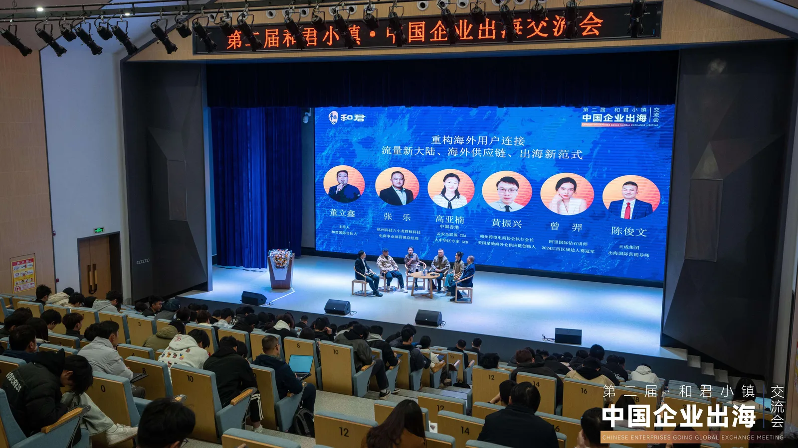
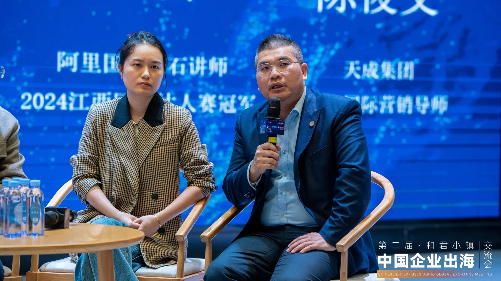

从“陪跑”到“领跑”——我在和君小镇出海交流会的思考
From “running alongside” to “leading the race” — reflections on the Hejun Town outbound forum.

文/陈俊文（大麦哥），天成集团企业出海国际营销陪跑导师。2025年11月29日至30日，第二届和君小镇·中国企业出海交流会在江西和君小镇圆满举行。作者参与了最后一轮圆桌对话《重构海外用户连接》的讨论。一天半的思想碰撞下来，最大的感受是：中国企业出海，正在从“蒙眼狂奔”走向“体系化作战”。
“怎么看、怎么干、怎么赢”
大会开幕时，主持人董立鑫抛出的三个问号——“2026中国企业出海，怎么看？怎么干？怎么赢？”——恰恰是我们这些一线陪跑者每天都在面对的问题。从和君集团董事长王明夫对中国企业出海形势的深度解读，到和君国际CEO解雷剖析的“出海避坑”指南，再到各区域专场的精准拆解，这场交流会让我感受到，出海已经从“可选项”变为“必选项”，从“单点突破”迈向“体系化竞争”。
“重构海外用户连接”——我的圆桌时刻
我参与的是最后一轮圆桌对话，由和君咨询董立鑫主持，同台的有杭州科技六小龙群核科技电商事业部营销总经理张乐、云安全联盟大中华区专家高亚楠、阿里国际钻石讲师曾羿、赣州跨境电商协会执行会长黄振兴等实战派专家。我们深入探讨了从AI工具应用到数据安全合规，从海外仓供应链到本地营销，从外贸陪跑到跨境电商的精细化运营。

作为一个长期在一线陪伴企业出海、提供国际营销陪跑的导师，我在圆桌上分享的核心观点是：今天的出海，已经不是“把货卖出去”那么简单了。用户连接的方式在变，信任建立的逻辑在变，品牌建设的方法论也在变。从“卖货”到“品牌”，从“流量”到“留量”，中国企业需要重构与海外用户的连接方式。这需要AI工具的赋能、本地化团队的支撑、供应链的保障，更需要一套系统化的运营体系。我们这些“陪跑者”，就是要在企业从“走出去”到“走进去”的每一步中，提供实战的陪伴与专业的支撑。
小镇的收获，不止于会场
除了正式议程，“和君小镇出海之夜”主题沙龙也让我收获颇丰。在国别沙龙中与同行们交流中东、东南亚、中亚等市场的落地经验，在科技出海专区探讨新能源、汽车、低空经济等前沿赛道的机遇——这些碰撞让我对2026年的出海图景有了更立体的认知。
特别值得一提的是，交流会期间赣州国际商会与和君小镇教培合作基地正式签约，“政-产-学-研”协同赋能企业国际化的新模式正式落地。作为一个常年在外贸一线陪跑的实战派，我深知人才培养和本地化扎根有多重要。这个基地的成立，将为出海企业构建更为坚实的本地化支持基础。
陪跑者的使命
一天半的交流虽然落幕，但思考才刚刚开始。面向2026，中国企业出海的道路上还有太多挑战需要面对，太多坑需要避开，太多机会需要把握。作为天成集团的企业出海国际营销陪跑导师，我的使命就是继续陪伴更多的中国企业，在国际市场上从“陪跑”走向“领跑”，从“走出去”走向“融进去”。
正如大会所倡导的——看清形势、找准路径、坚定前行。期待与更多同行者在出海的道路上相遇，共同书写中国企业全球化的新篇章。
本文作者陈俊文（大麦哥），天成集团企业出海国际营销陪跑导师，首发于海鑫汇官方公众号（2025年12月）。 查看公众号原文 →